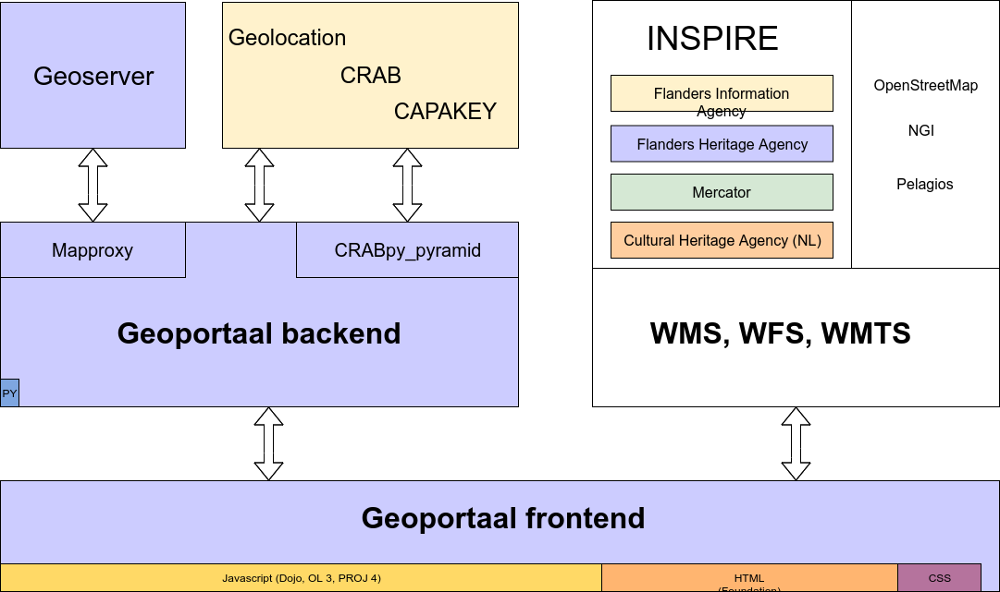

Flanders Heritage has had a geoportal since 2013. Although it has grown and transformed over the years, the basic goals and the architectural design have remained largely unchanged. Our first and main requirement was that we wanted something that was easy to use for a large userbase. We had observed that other geoportals tended to cater to the GIS professionals and quite often sought to build an online version of a desktop GIS. This creates a web application that might be versatile and quite powerful to people who know GIS, but is ultimately inaccessible to users who have no GIS experience. We wanted to create a user experience similar to Google Maps and other webbased mapping platforms, but specifically tailored to users looking for information on cultural heritage. We also wanted the geoportal to feel like an integral part of our online information systems. To achieve this we created reports that always link to our online sources through their persistent URI’s. These URI’s are present as metadata in all our geographical data and link features back to their authentic source. The database you can go to for the latest version of record, where the data is always up to date.
A second requirement came about through the data we wanted to show. While Flanders Heritage creates, maintains and publishes geodata about immovable cultural heritage, it does not publish other geodata. We have always relied heavily on Flanders Information Agency (the former Agentschap Geografische Informatie Vlaanderen or AGIV) as our partner for supplying us with geographical basemaps and non-heritage related information layers. We also had other layers we wanted to incorporate, from other entities of the Flemish Government such as Mercator or other countries (RCE). We not only rely upon Flanders Information Agency for geographical layers, they also provide alfanumerical services that help in navigating maps. There’s the CRAB service that enumerates all address data in Flanders , the CAPAKEY service that provides data on cadastral parcels and a geolocation service that helps to quickly find a certain address in a free-form text-search style. We wanted to use all these services, but not just copy their data, as would have happened ten years earlier. We wanted to store as little data as possible from these services. A few caches here and there are fine, but not full-scale copies of other services and databases. We fetch the data at it’s point of origin so the data we can show our end users are as uptodate as possible.
Finally, from a technical point of view we wanted to work with open source software (both for costs reasons and because it fit our tecnical stack nicely). We also wanted he maintenance of the portal be fairly simply, while still allowing us to configure things in an optimal way. As is often the case, we wanted to make the easy things simple to do and the hard things doable. This philosopy has worked out well for us. Adding new layers is done through configuration in code, which has allowed us to eg. optimise how layers are combined.
Software architecture of the Flanders Heritage Geoportal
So, if those were the main design considerations, where did we end up? As all modern applications, the geoportal consists of a back- and a frontend. The frontend is the most sizeable piece of code (about 98% of all code is Javascript, HTML and CSS) and consists of the map layout, UI/UX and general presentation layout. Since the code was written several years ago, it still uses a rather old Javascript framework, Dojo. The mapping interface uses Openlayers (and PROJ 4). The HTML and CSS comes from our implementation of the Flemish corporate style for websites using the Zurb Foundation framework <https://foundation.zurb.com/>`_. The geoportal frontend communicates entirely through services with either our own geoportal backend or other webservices.
Those other webservices are for the largest part INSPIRE compliant WMS, WMTS and WFS services hosted by one of several parties:
Flanders Information Agency hosts a large number of reference datasets such as basemaps, aerial photography, historic maps, address data, cadastrals parcels, … in the offical Flemish INSPIRE node.
Mercator is an INSPIRE subnode that hosts datasets and maps dealing with environmental data, but als our heritage data.
Specifically for our geoportal we host our own Geoserver instance. This allows us a bit more control over certain presentation related issues and is necessary because a few layers are reserved for internal or authenticated use only as we’ll explain later.
We have also include the Dutch INSPIRE layers about cultural heritage from our colleagues at Cultural Heritage Agency. Heritage doesn’t adhere to current day political boundaries, so it can be interesting for our users to have a look across the border. Having other published WMS services makes this easy to incorporate.
Finally we also use a few layers that are not a part of INSPIRE. We use OpenStreetMap as a good baselayer for general use and the NGI Topographical map for those who are interested. And for fun we also added the Pelagios map of the Roman World.
The geoportal backend is a simple Python application, written using the Pyramid framework. Apart from serving the static files for the frontend, it has two major functions. It’s main job is to proxy certain location services by Flanders Information Agency:
Geolocation, a service that suggests adressess based on simple text imput and returns geographical coordinates. It’s a quick and easy way to navigate our map of Flanders.
CRAB, a more much complex service that has full-address data in the form of lists of municipalities, streets, housenumbers and their location. We use this service in most of our systems to validate incoming data, but in the geoportal it’s used as a navigational aid. Users can descend from provinces over municipalities and streets to addresses, without ever getting lost along the way.
CAPAKEY, a REST service that has parcel data in the form of lists of municipalities, cadastral divisions and section and parcel numbers. Similar to the CRAB service, we use this service to guide our users through the Belgian cadastral system to the parcel they are interested in.
Nowadays, these three services are freely and openly available, so the need to proxy them might be less obvious now than when we started:
In te beginning both CRAB and CAPAKEY were SOAP services, difficult, if not impossible, to work with from within a browser using JS. Recently, CAPAKEY switched to a REST Service, so technically we could access it directly. But we’d still be left with the CRAB SOAP service. When we started out, both the CRAB and CAPAKEY services required authentication as well.
It frees us from fiddling with CORS headers. We already use CORS quite often, but getting everything to function together can be a hassle. The Geolocation does not support CORS anyway, so we would have to work with something like JSON-P there.
It protects us from upstream API changes. Since all our applications use our proxies, we only need to ensure the proxies knows how to talk to the upstream API. If these change (eg. the move from SOAP to REST for CAPAKEY), the impact on our systems is minimal and clear.
The proxies for CRAB and CAPAKEY also function as caches and reduce the number of calls we have to make to the upstream services tremendously.
We enhanced the AIV services in a few ways. We added a list of Flemish provinces, not present in either CRAB or CAPAKEY. We also incorporated a python library of all country codes, to be used in address validations.
If you yourself have a need for Flemish address or parcel data, and you’re using Python, feel free to use or CRABpy library. If you’re using the same framework we are, Pyramid, you can also use CRABpy_pyramid that makes it easy to integrate the library in a Pyramid environment and also offers a set of opinionated JSON views on the upstream services.
The other main component of our Python backend is an open source project called Mapproxy. This wonderful library helped us solve what, for a while, was the most challenging aspect of building the geoportal: dealing with non-publicly accessible spatial data. Our prime example is a database of archaeological findspots. For several reasons, this database and the accompanying GIS data, is not available to the general public. The data is not part of INSPIRE, but does have WMS/WFS services in our own Geoserver instance. This service can be protected by using username/password. Off course, if we would just include this service in our frontend code, we would be exposing the username and password to clients. Luckily, Mapproxy makes this easy to solve. The services are proxied on our geoportal server, but with Mapproxy intercepting all calls and doing authentication and authorisation on the supplied credentials. This way, we can transform the typical Pyramid authentication/authorisation policies we use in all our webapplications to statements about the configured GIS layers.
Apart from this essential security related proxying, we also proxy WMS GetFeatureInfo requests through Mapproxy, again to avoid potential CORS issues. In the near future we might also be using it’s caching features, although we haven’t done so this far.
All in all, our geoportal has proven to be an important online platform for us. It has been in use for years now and is used quite a lot. The cost of building and maintaining it however, has been fairly low. The portal itself requires very little when it comes to hardware to run on and has a very low footrpint when running. Interested in our setup, have a look at our software libraries at Github or drop us a line at ict@onroerenderfgoed.be